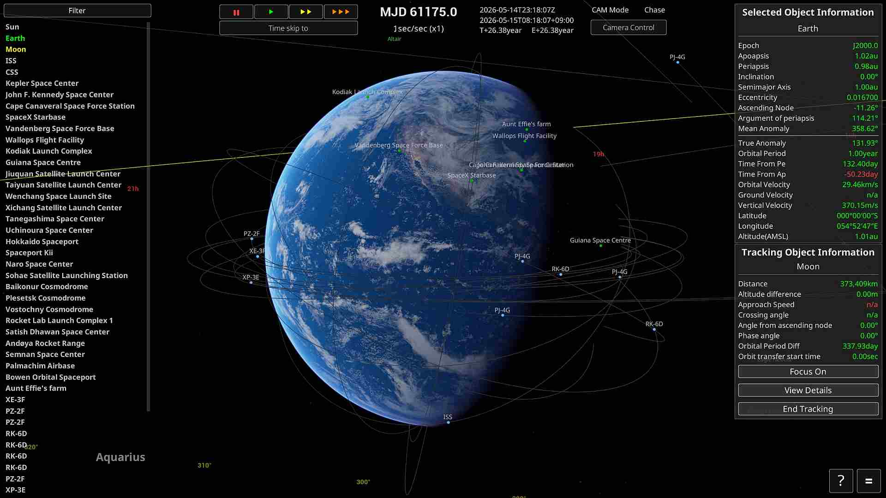

Introduction
Welcome to the Keplerian Space Discovery Manual.
Main Screen

Object Selector
You can switch the selected item by left-clicking on the options on the left side of the screen.
You can also select an item as the target by clicking the middle mouse button.
Time Controls
・You can accelerate time starting from an altitude of 1 km or higher.
・"||"stops time, “▶” sets the speed to normal, "▶▶” sets it to 2x, and “▶▶▶” sets it to 10x.
・You can stack the effects of "▶▶” and “▶▶▶” by pressing them repeatedly. For example, pressing "▶▶” three times sets the speed to 8x.
Control Keys
| Control | Keybord | Mouse | Game Pad |
|---|---|---|---|
| Camera Rotation | I/K/J/L | RMB+Drag | Right thumbstick |
| Camera Move | - | MMB+Drag | - |
| Camera Dolly | Home/End | Wheel | L/R Trigger |
| Camera Zoom | Page Up/Down | - | - |
| Camera ExpComp | Insert/Delete | - | - |
| Camera Mode Change | V | MMB+RMB | Back button |
| Camera Orientation *1 | - | LMB+Drag | - |
| Camera Roll *1 | Q/E | - | L/R Shoulder |
| Camera Reset | - | LMB+RMB | Right thumbstick Btn |
| Map view | M | - | - |
| UI Show/Hide | F2 | - | - |
| SOI Show/Hide | F3 | - | - |
| Quick Save | F5 | - | - |
| Quick Load | F9 | - | - |
| Start Tracking | O | RMB on the list | Y button |
| Open Menu | ESC | - | Start button |
| Control Panel Open *2 | C | - | X button |
| Throttle Max *3 | Z | - | - |
| Throttle Min *3 | X | - | - |
| Throttle Up *3 | Left Shift | - | - |
| Throttle Down *3 | Left Ctrl | - | - |
| Stage Sparation *3 | Space | - | - |
| Roll *3 | Q/E | - | - |
| Pitch *3 | W/S | - | - |
| Yaw *3 | A/D | - | - |
| Debug Console | ALT + F12 | - | - |
*1 : CAM Mode other than 'Chase'.
*2 : Only when selecting a spacecraft.
*3 : Only when spacecraft control mode.